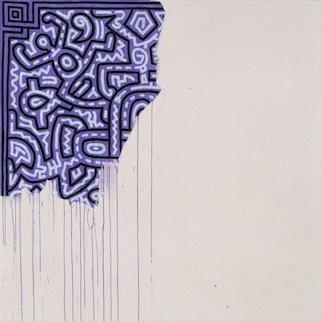

Unfinished Painting
Keith Haring · 1989 · Acrylic on canvas · 100 × 100 cm · Private collection
In copyright. Look and learn: shown for study, not for download.
This is known as one of Haring's final paintings before his death in 1990, at the age of 31, from AIDS-related complications. He left it unfinished on purpose, and roughly three quarters of the canvas is blank. In an interview with Rolling Stone in 1989, the year he painted it, he spoke about living with HIV/AIDS.